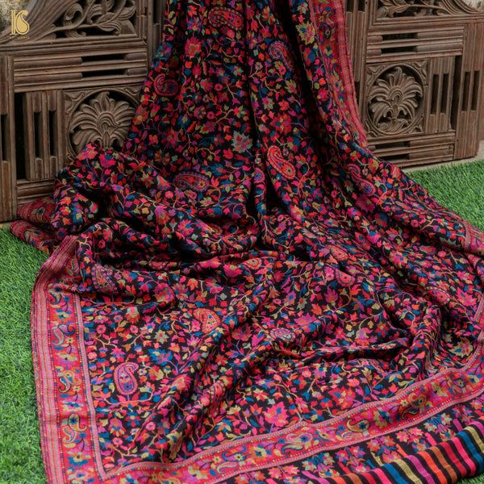
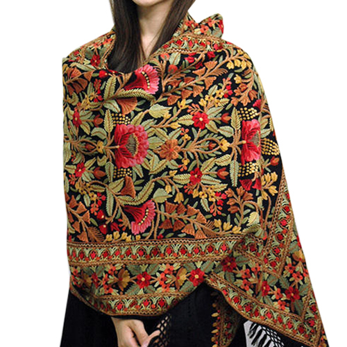

📖 Origin & Evolution
Pashmina, often called the “soft gold” of Kashmir, is a fine type of wool derived from the undercoat of Changthangi goats found in the high-altitude regions of Ladakh. The tradition of weaving Pashmina shawls dates back to the 15th century when Zain-ul-Abidin, a Kashmiri ruler, promoted its art. Over centuries, it became a symbol of luxury and elegance, loved by royalty across the world.
💡 Did You Know?
🧵 A genuine Pashmina thread is so fine it cannot be spun on machines — only by hand.
❄️ Pashmina wool is obtained from Changthangi goats that survive at altitudes above 12,000 ft in extreme cold.
👑 Mughal emperors and European aristocrats treasured Kashmiri Pashmina as a royal fabric.
🌍 Pashmina weaving is recognized globally as part of Kashmir’s intangible cultural heritage.
👑 Famous Pashmina Shawl Styles
Kanis Shawl – Woven on traditional looms with wooden sticks called “Tujis”.
Sozni Embroidery – Intricate needlework with delicate floral and paisley designs.
Jama – Heavy shawls worn by Mughal emperors.
Reversible Pashmina – Two different shades woven into one shawl.
🎯 Quick Quiz:
From which animal is authentic Pashmina wool obtained?